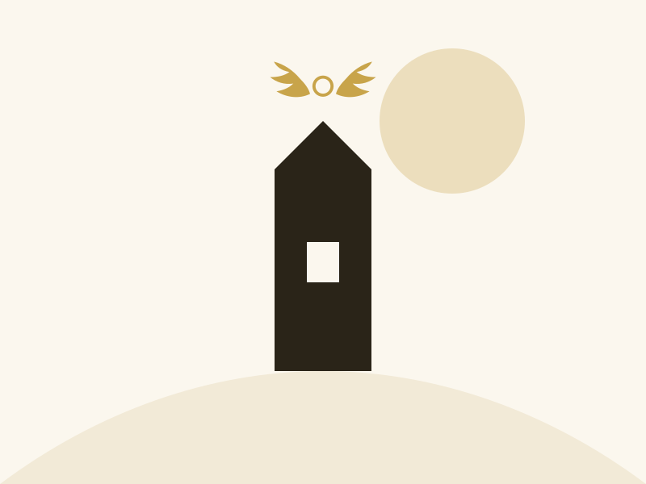
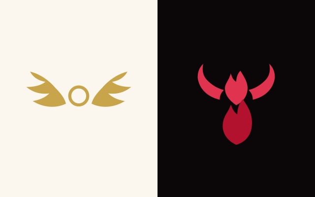
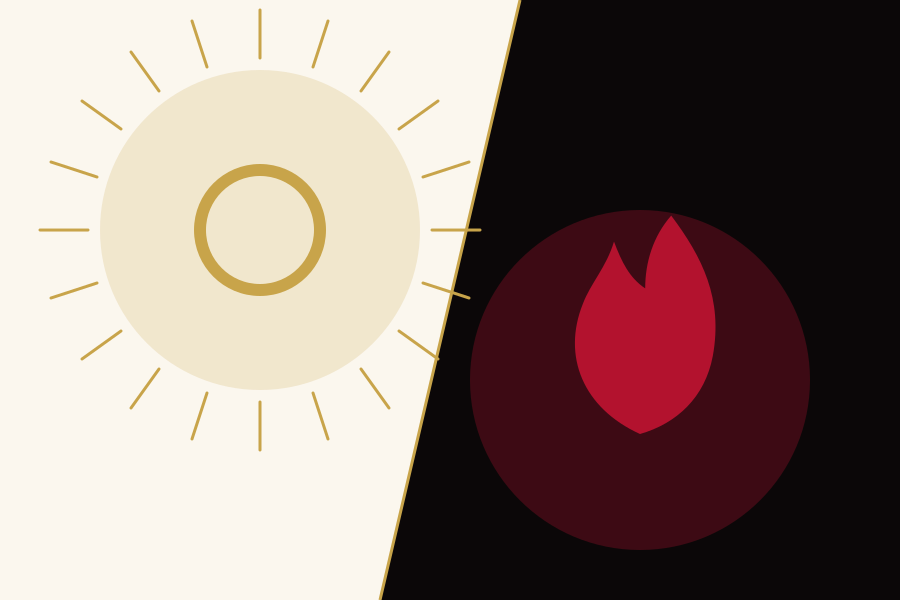
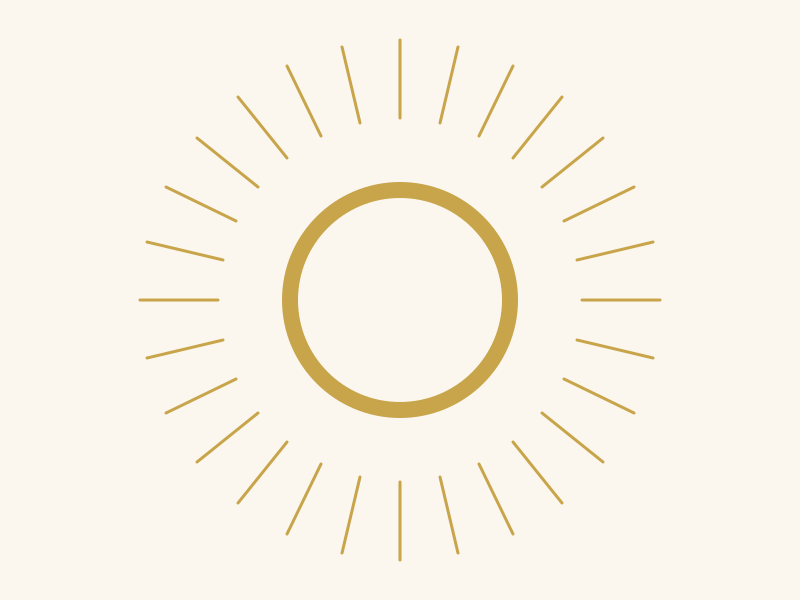
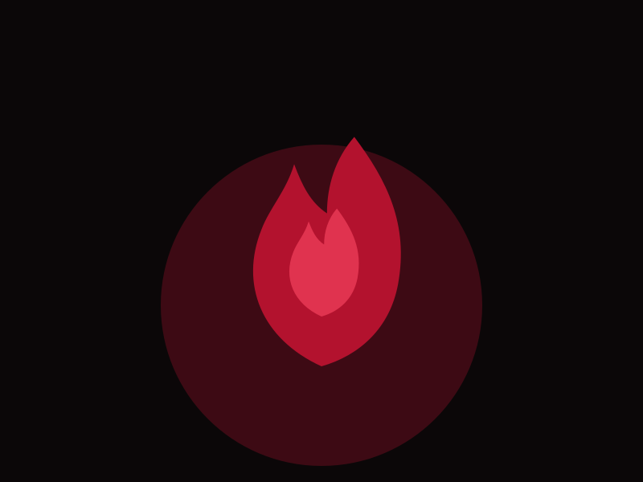
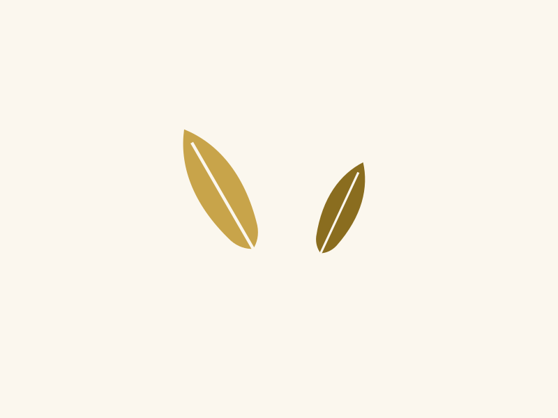
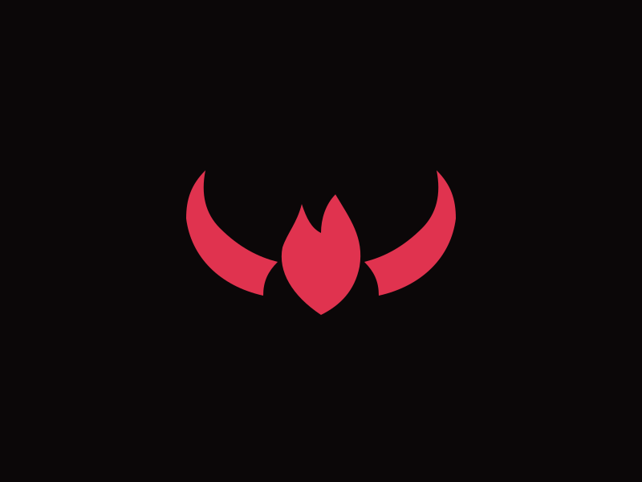
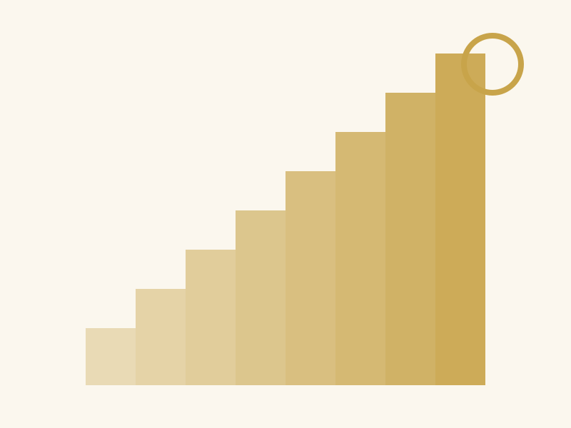
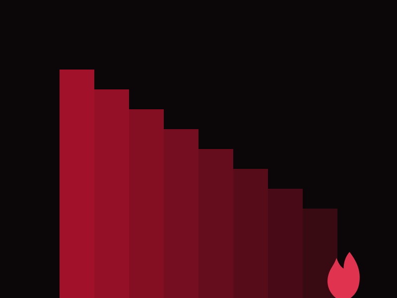

Loyal to the day
Always ivory, always gold. A card like this can announce a chapter of light on a dark page.
Two faces of one site
Ivory, an antique gold, white type on gold bands, wings around a halo, and a soft light from above.
Read the ascentBlack, a red that reads on black, black type on red bands, horns around a flame, and hard shadows from below.
Read the descentThe toggle in the top corner chooses which face the rest of the page wears; every colour is a light-dark() pair, so the swap is complete. The two panels above are pinned, one to each face, with two classes.
Body text never sits on a band, so everything you read clears AA in both faces. Only display type, 24px and up in bold, goes white on gold or black on red.
| Element | By day | By night |
|---|---|---|
| Page and surfaces | Ivory, #fbf7ee | Off-black, #0b0708 |
| Links, focus, primary buttons | Antique gold, #8a6d1f | Red, #e0334f |
| Bands (display type only) | White on gold, #c8a44a | Black on red, #b3122e |
| Ornament | Wings around a halo | Horns around a flame |
| Shadows | Soft, gold-tinted radiance | Hard, offset, pure black |
| Behind the page | Light from above | Flame from below |
The left card is pinned to the day with allegory-halo and the right to the night with allegory-horn. The middle one follows you. Flip the toggle and watch which of them move.
Always ivory, always gold. A card like this can announce a chapter of light on a dark page.
An ordinary card. It takes whichever face the page is wearing, and its icon takes the band colour.

Always black, always red. Native controls inside it turn dark too, because the pin is color-scheme.
The example site tells one night twice. Its two chapter pages use the same sections in the same order; the media sits on opposite sides, and the bands wear opposite colours.

Mara Quill climbs the bell tower of Corren to ring the hour. Media on the left, gold band.

Tobin Marrow lowers himself into the dry well under the same tower. Media on the right, red band.
Every template has one feature card with an effect of its own. This one turns over and shows the other face. Hover it, or tab into it.

Half a turn about its spine. When it is edge on, the colours swap to the opposite face, so on a light page the back is black and red, and on a dark page it is ivory and gold.
Every bell that lifts a soul is rung by someone standing in the dark below it.
The Bell at Corren, chapter one

The seam
A pinned section keeps its face while the page around it changes. The diptych in the hero is two pinned panels in a grid; the cards above are pinned one at a time. The ornament inside a pin is chosen by hand, because a mask is not a colour.
How the pins workFour from the ascent and four from the descent, alternating. The lightbox is a <dialog>; the arrows are links, and Esc closes it.






Buttons are Inter in tracked capitals, plus one in italic display type, the vow, for a promise rather than an action. A switch is a checkbox with role="switch". Badges and banners carry status in the scheme's own hues.
Accordions are native <details>. Summaries are set in the display face; give a group one name and opening one closes the rest.
Because one palette block does both. Every slot is a light-dark() pair, so the same tokens paint the angel and the devil; nothing is duplicated and nothing can drift.
Not for body text, which is why body text never goes there. Bands carry display type only, 24px and up in bold, where the shape of the letters does the work. Links and buttons use the darker #8a6d1f, which clears 4.5:1 on ivory.
The colours do; the drawing does not. Retoken takes the palette block only. The wings and horns are --allegory-* masks keyed to data-scheme, and stay with this template.
A single accordion stands on its own.
css/, js/theme.js and assets/. Everything else in the folder is showcase and can go.
Dialogs are native too. The gate below opens one; the dialog closes itself through a form.
Prose is what a story is made of, so .prose styles every construct a markdown renderer produces. Headings are Cormorant Garamond; quotations are set in its italic against a band-coloured rule. The blog post runs the full test document through it, and defaults shows every bare element.
A template is a promise about what markup will look like. This one makes the promise twice and keeps it both times.